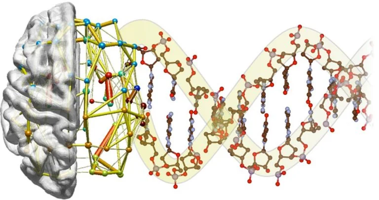

01
Neuroimaging Genetics
Imaging genetics = Neuroimaging + Genetics information
An emerging field that has huge potential to improve understanding of complex neurological conditions.
We identify concrete links between morphological or functional changes in the brain and genetic variants linked to disease, discovering biologically meaningful biomarkers.
- Imaging genetics association & integration analysis
- Sparse canonical correlation analysis (SCCA)
- Multi-view non-negative matrix factorization
- Biomarkers of Parkinson’s & Alzheimer’s disease